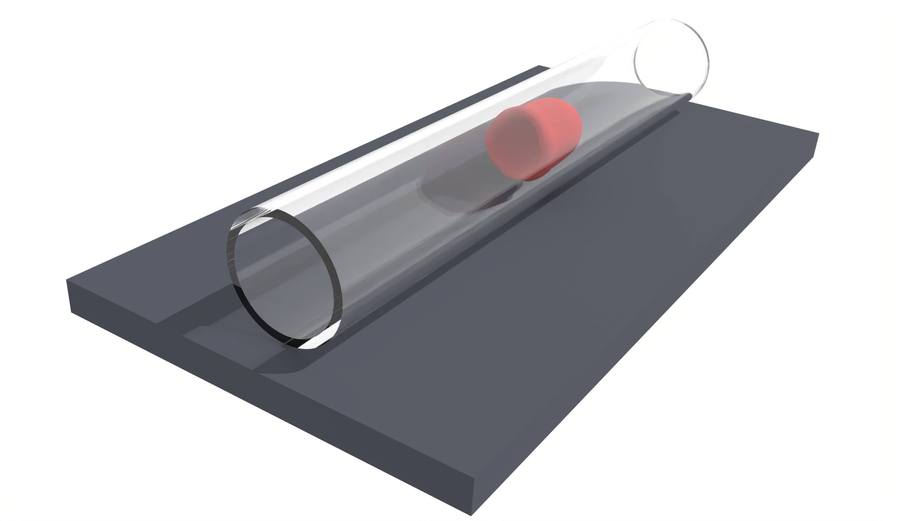
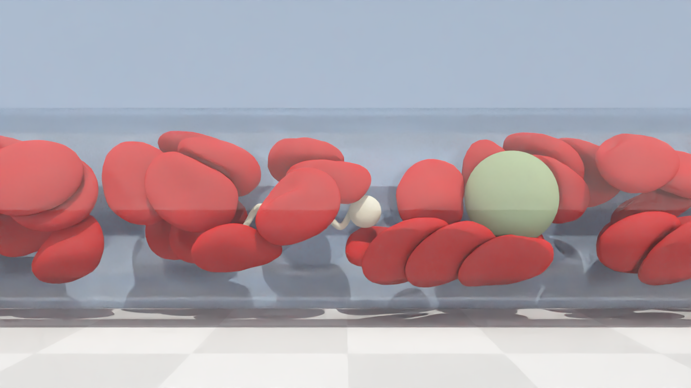
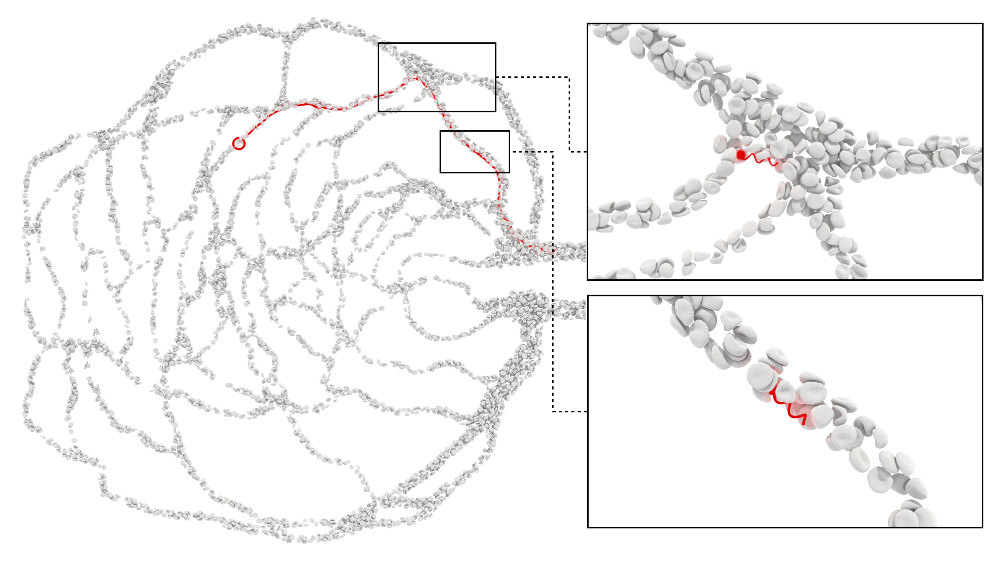
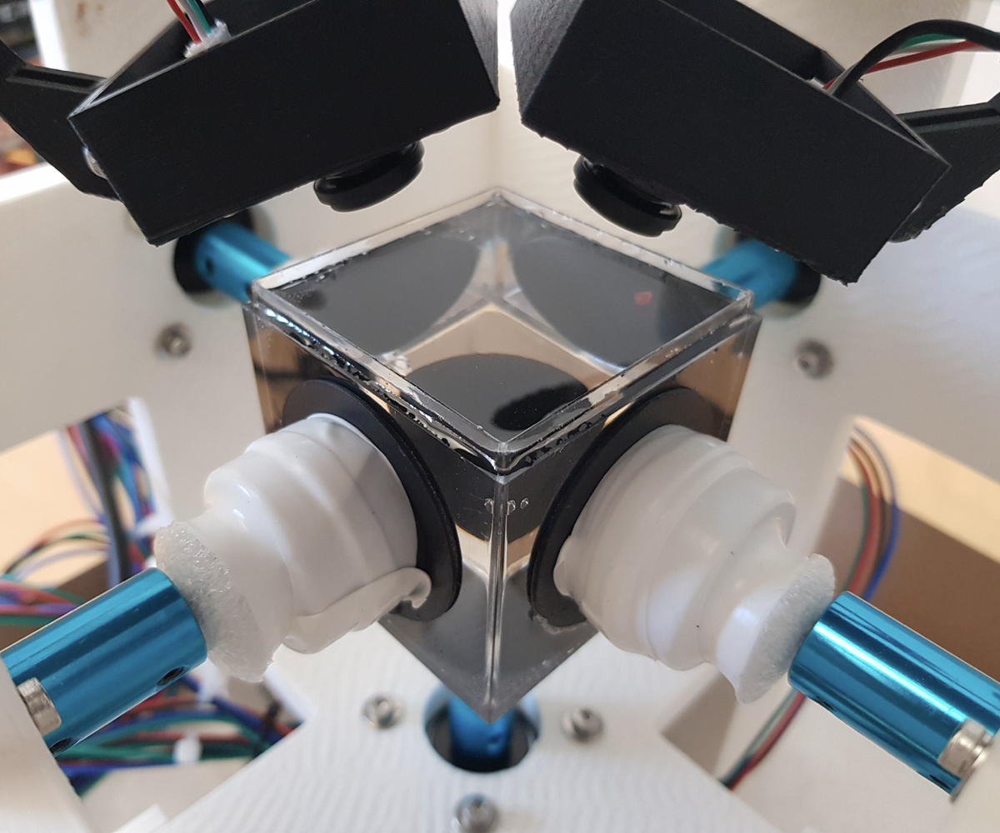
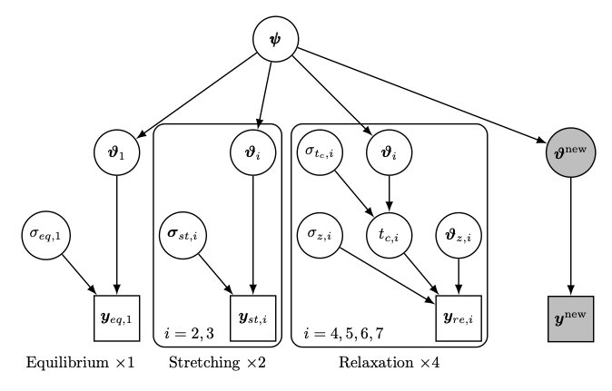

Welcome to my personal website!
My name is Lucas Amoudruz, I'm currently a research associate at Harvard University in the computational science and engineering laboratory.
My research interests include numerical simulations of microfluidics, red blood cells modeling, blood flow simulations, artificial microswimmers, reinforcement learning, high performance computing, cloud computing and Bayesian inference.
The most fun part for me is to combine multiple aspects of the above!
Email: amlucas@seas.harvard.edu
Scholar: Lucas Amoudruz
Github: amlucas
Address: 29 Oxford St, Cambridge, MA 02138
I develop computational methods and software to simulate and control microscale systems, including blood flow and artificial microswimmers. My work combines high-performance computing, fluid dynamics, Bayesian inference, and artificial intelligence to enable biomedical applications such as targeted drug delivery and flow manipulation in microfluidics.

Simulating blood at the cellular resolution is a complex task, as it involves resolving hydrodynamics between deforming cells. Blood is mainly composed of red blood cells (RBCs), and one of the contributions during my PhD was to accurately model these cells and their interactions at large scale. We use particles to represent RBCs and all fluids, via the dissipative particle dynamics (DPD) method. The membranes are discretized into a triangle mesh and elastic forces arise from bending and stretching energy potentials. Simulations typically consist of millions to billions of these particles, and we thus implemented a custom software package, Mirheo. Mirheo is implemented in C++/CUDA/MPI and achieves above 98% weak scaling efficiency across 1000 GPUs. Check out our 2020 paper in Computer Physics Communications for benchmarks and implementation details. Recently we have been tested the performance of Mirheo on the public cloud (article currently under review).

Artificial bacterial flagella (ABFs) are micron-sized devices equiped with a magnetic head and a corkscrew shaped body, which makes them able to propel when they are immersed in a rotating magnetic field. They are great candidates to reach specific regions in the body in a non-invasive way by swimming through the circulatory system of the body. Applications are numerous: targeted drug delivery, microsurgery, remote sensing, cells manipulation... I have extended our custom software Mirheo to simulate ABFs in blood. Here is a video of an ABF swimming in blood and another one of many ABFs in a bifurcation. One particular focus of my research tries to answer the following question: how to control the external magnetic field to guide ABFs to a target?

One possible approach is to use reinforcement learning (RL). RL learns a control policy by interacting with an environment. Typically, RL converges after thousands of episodes, while one simulation of ABFs in blood require thousands of GPU-hours. Instead we train the RL agent on reduced order models, which are much cheaper. We then test the learned policy in large scale simulations, as shown on the picture on the right. Details are available in our 2025 article in Physics of Fluids. Check out the video of the policy in action. RL was also helpful to design policies that control multiple ABFs independently, a difficult task given that the magnetic field is essentially uniform at these scales. Additional details can be found in our 2022 article in Advanced Intelligence Systems, where we have exploited the swimming properties of ABFs of different shapes.

Reinforcement learning is a great tools for control, but does not always converge in the settings I am interesting in. Furthermore, I typically have a model of the systems I want to control. This lead us to developping a novel method that learns policies from a path planning objective and from the dynamics of the system in the form of an ODE or a PDE.
The method relies on ODIL, developped at CSE-Lab, originally used to solve PDE-based inverse problems. In the context of control and path planning, we use ODIL to solve both the system dynamics and the control policy at the same time. This approach is more efficient than RL in numerous benchmarks, summarized in our 2025 article published in Physical Review Letters.
To check the performance of that method, we have built a robotic device (shown in the right picture) that creates flow with rotating disks. Using the policy found by ODIL, the device can transport small beads to precise targets, as explained in our 2025 publication in Journal of Fluid Mechanics. I have built this robot with Petr Karnakov in less than two months to participate at the MassRobotics Form and Function Challenge where we have placed second over more than 40 participants.

Calibrating the red blood cell (RBC) membrane model is crucial to predict blood flows. Prior work has been fitting the membrane parameters to experimental datasets, but we found that this approach leads to a poor transferability of the model. Instead, we have combined multiple experimental datasets to find the model parameters. Furthermore, the model and the data contain numerical, modeling and measurement errors.
To handle these sources of uncertainties, and the multiple datasets, we have taken a hierarchical Bayesian approach, represented on the left diagram. This structure models the variability of the model parameters within populations of RBCs. We found that hierarchical Bayesian inference gave a transferable model which can predict RBC dynamics in situations that were not used during the calibration of the model. More details are available in our 2021 publications in Physical Review Applied and our 2023 publication in Biophysical Journal.
Amoudruz, L., Litvinov, S. and Koumoutsakos, P., 2025. Path planning of magnetic microswimmers in high-fidelity simulations of capillaries with deep reinforcement learning. Physics of Fluids, 37, 071703. DOI arxiv
Amoudruz, L, Karnakov, P., and Koumoutsakos, P., 2025. Contactless precision steering of particles in a fluid inside a cube with rotating walls. Journal of Fluid Mechanics, 1014:A15. DOI arxiv
Alexeev, D., Litvinov, S., Economides, A., Amoudruz, L., Toner, M. and Koumoutsakos, P., 2025. Inertial Focusing of Spherical Particles: The Effects of Rotational Motion. Phys. Rev. Fluids, 10(5), p.054202. DOI arxiv
Karnakov, P., Amoudruz, L. and Koumoutsakos, P, 2025. Optimal Navigation in Microfluidics via the Optimization of a Discrete Loss. Physical Review Letters, 134(4), p.044001. DOI arxiv
Amoudruz, L. and Koumoutsakos, P., 2022. Independent control and path planning of microswimmers with a uniform magnetic field. Advanced Intelligent Systems, 4(3), p.2100183. DOI arxiv
Amoudruz, L., 2022. Simulations and Control of Artificial Microswimmers in Blood (Doctoral dissertation, ETH Zurich). DOI
Alexeev, D., Amoudruz, L., Litvinov, S. and Koumoutsakos, P., 2020. Mirheo: High-performance mesoscale simulations for microfluidics. Computer Physics Communications, 254, p.107298. DOI arxiv
Wälchli, D., Martin, S.M., Economides, A., Amoudruz, L., Arampatzis, G., Bian, X. and Koumoutsakos, P., 2020, June. Load balancing in large scale bayesian inference. In Proceedings of the Platform for Advanced Scientific Computing Conference (pp. 1-12). DOI